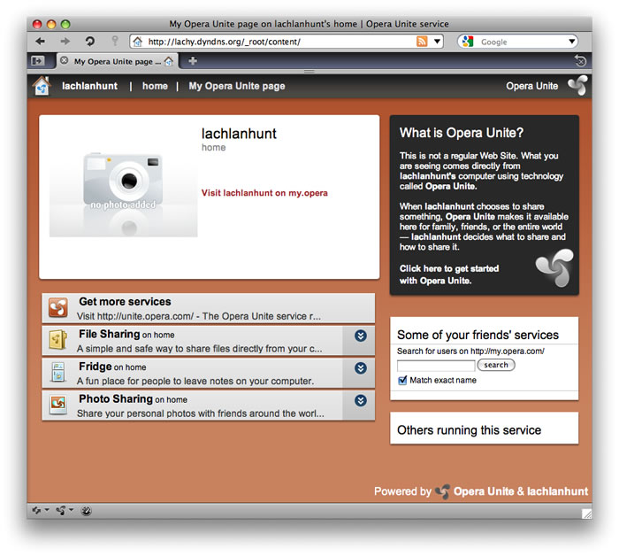
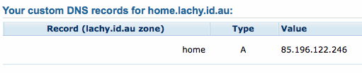

Setting up custom domains for Opera Unite
24th April 2012: Please note
Starting with Opera 12, Opera Unite will be turned off for new users and completely removed in a later release. If you're interested in building addons for Opera, we recommend going with our extensions platform — check out our extensions documentation to get started.
Introduction
Typically, to connect to a service running in Opera Unite, you use a domain name assigned by Opera, based on your My Opera username and the name you chose for your device, for example:
home.lachlanhunt.operaunite.comThis will connect to your services through Opera’s proxy servers.
This is all well and good, but what if you want to use a different domain name, entirely of your own choosing? For example, you may wish to use a dynamic DNS domain name provided by a service such as DynDNS, or even a domain name that you’ve registered yourself. This article will walk you through the process of setting this up to meet your needs.
Direct Access
The first step is to ensure that your services are up and running, and are directly accessible from your machine running Unite services. Unite listens for connections on port 8840, which you need to specify when connecting directly. Enter the following into your browser’s address bar:
http://localhost:8840/This should work in Opera, or in fact any other browser you may have running on the same machine. If this works, you’re good to go. If not, you need to ensure that Unite is running properly before proceeding.
Remote Access
To access your Unite services remotely, you need to know the external IP address assigned to you by your ISP. Using this IP address, it should be possible for anyone to connect to your services from anywhere.
The easiest way to find out your IP address is to visit whatsmyip.org. (Note that this may not give the correct result if you are connected to a VPN, or if you’re connecting through an anonymous proxy service).
If your router supports UPnP, Opera Unite will automatically configure forwarding of port 8840 and you can use this IP address to access your services. Type the following into your browser’s address bar, substituting your own IP address:
http://xxx.xxx.xxx.xxx:8840/For example, if your external IP address was 208.77.188.166, you would type:
http://208.77.188.166:8840/If this doesn’t work, don’t worry. It probably just means your router doesn’t support UPnP. In any case, our next step is to configure port forwarding.
Port Forwarding
You can choose the port to enable forwarding for, depending on your needs. If UPnP worked for you, and you wish to continue using port 8840, then you can skip this step. If UPnP didn’t work for you, or you wish to use an alternative port, then please read on.
For convenience, it’s useful to be able to connect to services without having to specify the port number. This is done by allowing incoming connections on port 80 to be forwarded to Unite on the local port 8840. Port 80 is the standard port used for incoming HTTP connections, however please note that some ISPs may not allow incoming connections on this port, and so you may need to continue using port 8840 instead.
The method of setting up port forwarding depends on which router you are using. If you don’t know how to do this, either consult your user manual, or check portforward.com for instructions relating to your particular router.
Port forwarding works by listening for external connections on port 80 and then forwarding the connection to the specified local IP address on port 8840. The Unite services listening on this port will then respond.
You will need to assign a fixed local IP address to your machine. If you use a dynamic IP address, then it may change next time you restart your machine and the ports will not be forwarded correctly. Once you have assigned an IP address, forward remote connections on port 80 to the assigned IP address on the local port 8840.
If you chose not to use port 80, simply substitute it with port 8840 or another port of your choosing. However, note that by doing this, you will need to specify the chosen port number in all URLs for your services. The following instructions assume you have chosen port 80.
Once you have done this, ensure that it works by attempting to access your services remotely without specifying the port number. Type the following into your browser’s address bar, substituting your own IP address:
http://xxx.xxx.xxx.xxx/For example:
http://208.77.188.166/If this doesn’t work, then recheck the configuration of your router to ensure you correctly enabled port forwarding.
Getting a Domain Name
There are a few alternatives available to you for getting a domain name. The easiest way to get up and running is to use a dynamic DNS service such as DynDNS or No-IP. If, like many people, your ISP assigns you a dynamic IP address that regularly changes, using such a service may be your only viable option, as they will help keep your DNS configuration in sync with changes to your IP address.
For example, I have a domain provided by DynDNS:
http://lachy.dyndns.org/Using the tools provided by your chosen service, simply register your current external IP address with them, and you should be up and running in no time. There is a free Opera DynDNS Widget available to assist you with keeping your IP address registration up to date, provided you are using DynDNS, of course.
After you have the domain set up, simply enter your domain name into your address bar and it should work - see Figure 1 (note the URL).
Figure 1: Accessing Opera Unite a dynamic DNS domain.
Custom DNS
Advanced users may wish to handle their own DNS configuration, rather than relying on a dynamic DNS service. Note that if your ISP assigns you a dynamic IP address that changes frequently, this is not going to be a viable option for you. You need to have a static IP, or at least a sticky dynamic IP that changes very infrequently.
Note: Inexperienced users are advised to not continue with the following steps, or at least proceed with caution.
You can either register a new domain through any accredited domain registrar, or, if you already own a domain, you can use that or create a new subdomain. Once you’ve decided what domain or subdomain you wish to use, you need to configure the DNS settings. Some web service providers allow you to do this yourself via a web based interface, others may require you to contact them to make the necessary changes.
For example, I registered a subdomain under my existing domain:
http://home.lachy.id.au/In the DNS configuration for your domain, you need to specify a type A record with the value set to your external IP address, as shown in Figure 2.
Figure 2: My DNS configuration set up to allow Opera Unite access through my own domain.
You may need to wait a few hours for the DNS changes to propagate across the internet before this will work. But, if you’ve done everything correctly, it should begin to work shortly, see Figure 3 for an example (note the URL).
Figure 3: Accessing Opera Unite through my own domain.
This article is licensed under a Creative Commons Attribution, Non Commercial - Share Alike 2.5 license.
Comments
The forum archive of this article is still available on My Opera.
-

this is fine, but once the main streaming media page comes up either by connecting to it directly (server name or external IP), all web links to files and folders point to the Opera Unite Proxy address (http://site.accountname.operaunite.com). What is the way to tell the Unite application to send local links?
No new comments accepted.daconnect
Thursday, December 27, 2012